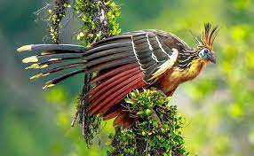

Jacu-Cigano
Ophisthocomus hoazin

Se alimenta de folhas, flores, frutos e capins. Para digerir esses alimentos,
a ave possui um sistema de papos extremamente forte para trituração do alimento.
Devido ao odor desagradável que transmite durante a digestão, o pássaro também é conhecido como Catingueira.